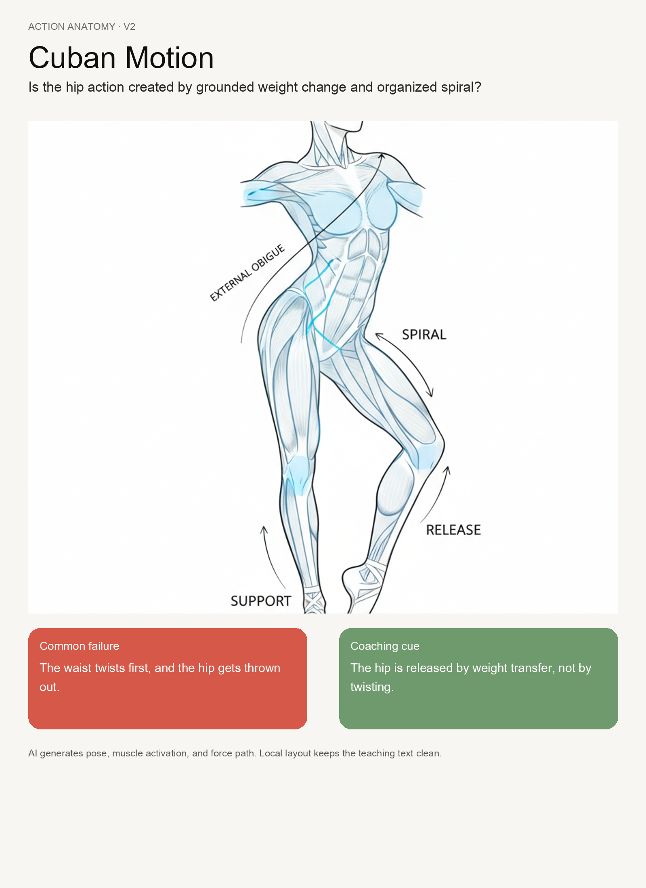
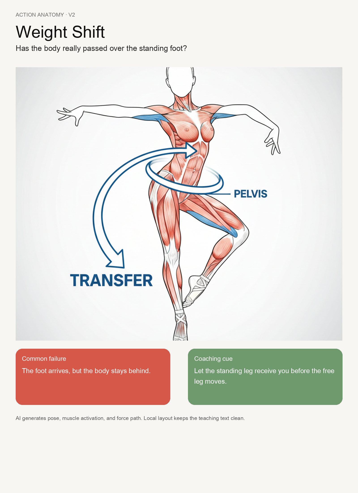
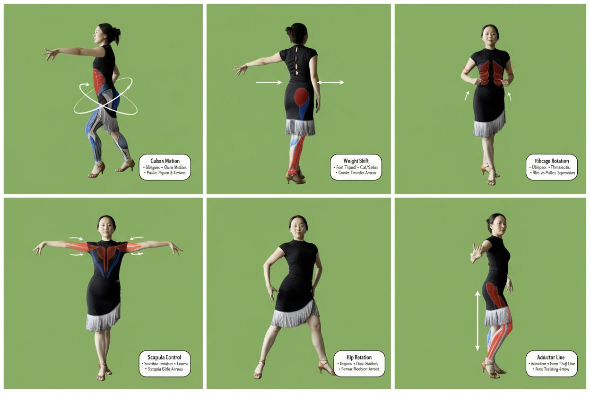
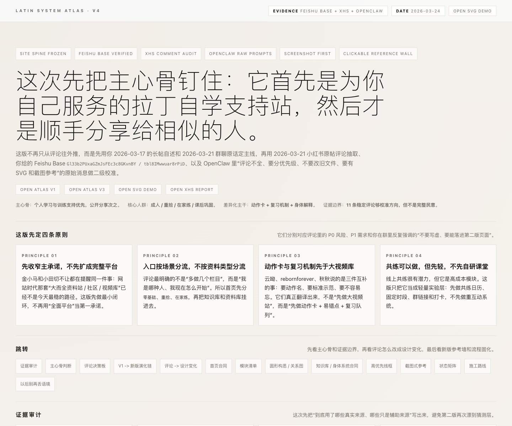

别再用抽象地图解释拉丁舞。
首页面对的是业余初学者：先看见身体、动作与节奏，获得全局感；再从“我哪里不会”进入发力点、基本步和短练习。
动作教练 · Visual Coach
用你已有的拉丁动作解剖图直接当首页主角。初学者不用理解系统架构，先回答“这是什么动作、哪里发力、我今天怎么练”。
胯，不是扭出来的。
先把重心交给主力腿，再让骨盆自然经过。点开身体上的发力位置，做一轮 60 秒练习。
开始探索发力点 →

主力腿骨盆路径动作大图、错误/提示对照、问题式标题。
不要把英文解剖标签原样公开；专业内容需复核。
首页主视觉、发力实验室、动作详情页。
空间身体 · Apple-like Body Explorer
苹果设计不等于玻璃和大字，而是直接操纵：点击肩胛、核心、骨盆、脚底，内容从触点原位展开，可随时反向关闭。

你想找哪里？
不先读百科。直接从身体困惑开始：为什么站不稳、为什么胯动不起来、为什么肩膀总抢力。
即时反馈、触点原位展开、可中断弹簧动效。
不要堆玻璃拟态；动作本身必须比界面效果更醒目。
身体系统总览、发力点查找、移动端探索。
初学卡组 · Beginner Deck
像一套可以翻动、收藏、继续练的视觉卡组。它最贴近小红书用户的阅读习惯，也容易承接原帖里的学习路径、基本步、节拍和居家练习。
先选今天的困惑。
不是把六大模块摊给你，而是用三张真实入口卡，把知识库和身体系统藏在练习后面。
我不知道从哪里发力
看身体链 → 找代偿 → 60 秒自测
基本步细节总是忘
动作名称 → 慢速拆解 → 下次复习

音乐响起还是数不清
先听强拍 → 找舞种性格 → 跟一小段
小红书式图文密度、横向滑动、保存与回流。
不要变成彩色课程商城，也不伪造学习进度。
首页入口、今日练习、知识卡与分享图。
动作胶片 · Motion Filmstrip
拉丁的本质是时间中的动作。用连续姿态、节拍与力线构成横向胶片，比静态系统图更能让用户一眼认出“这是舞”。
看见动作发生的顺序。
脚落下不等于重心到位。把一帧里的“脚底—主力腿—骨盆—躯干”拆成可观察顺序。
时间顺序、节拍刻度、前后帧对照。
不要只做装饰性视频背景；必须能暂停和看懂。
动作实验室、节拍模块、首页第二屏。
| 方向 | 初学者全局感 | 找到发力点 | 拉丁识别度 | 灵动潜力 | 建议 |
|---|---|---|---|---|---|
| A 动作教练 | 中 | 最高 | 高 | 中 | 首页主方向 |
| B 空间身体 | 中 | 高 | 高 | 最高 | 核心交互 |
| C 初学卡组 | 最高 | 中 | 中高 | 高 | 首页入口层 |
| D 动作胶片 | 中 | 高 | 最高 | 高 | 动作/节拍层 |
不要再做
- 与拉丁没有直接关系的抽象圆环、宇宙地图和大面积空洞口号。
- 首屏 80px 以上的大标题挤掉动作本身。
- 把“六个模块”当六张同质卡片一次摊完。
- 为了像 Apple 而堆玻璃、渐变和不可操作的动效。
- 未经专业复核就把 AI 肌肉高亮当医学或生物力学事实。
我建议先选：A+B+C 混合。
首屏用 A 的拉丁动作大图建立辨识度；在图上使用 B 的可点击发力点与流畅展开；下面用 C 的“零基础 / 重拾 / 在家练”卡组建立全局入口。D 留给动作实验室和节拍内容，不必全部挤进首页。